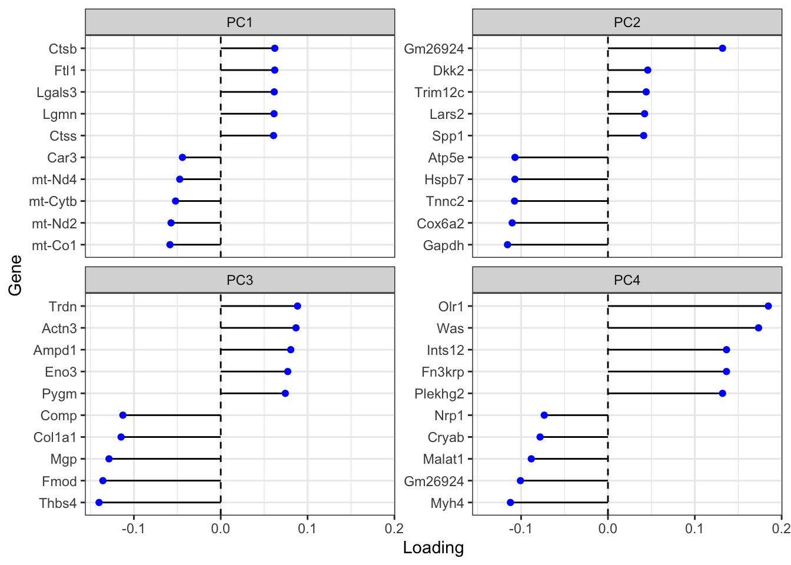
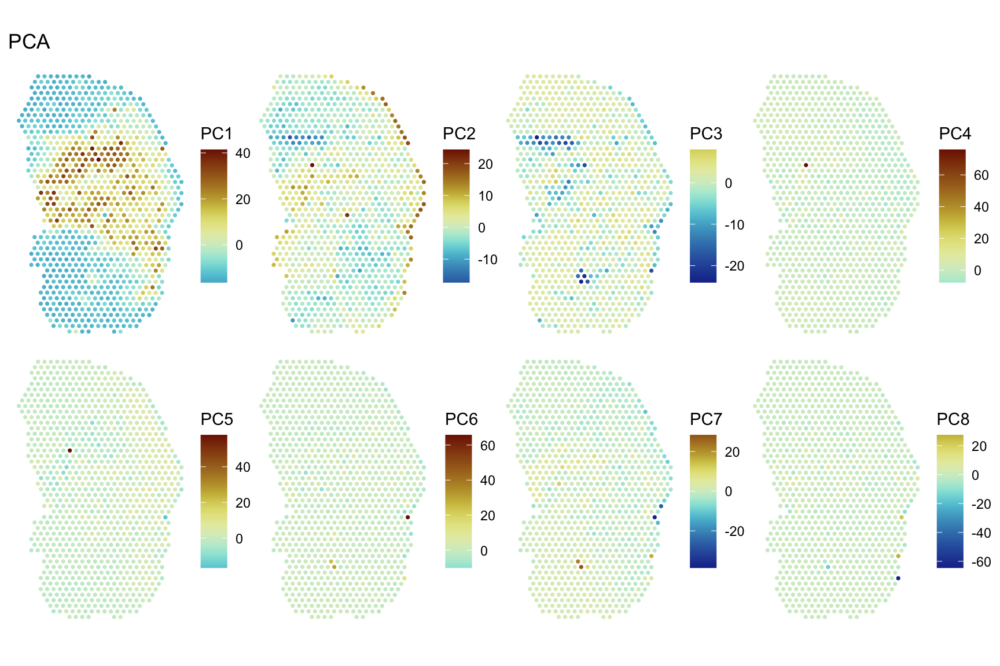
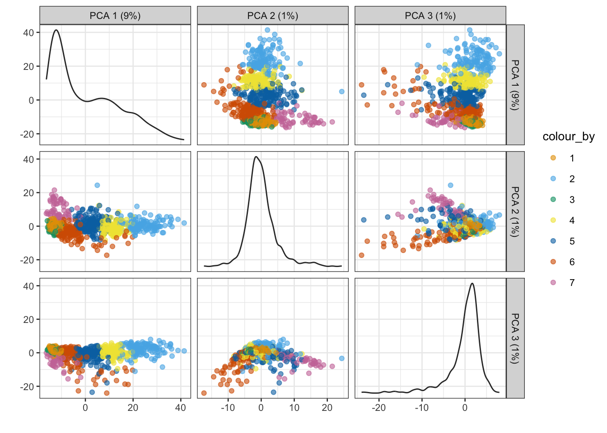

library(ade4)
library(adespatial)
library(SFEData)
library(scater)
library(scran)
library(Voyager)
library(sparseMatrixStats)
library(SingleCellExperiment)
library(tidyverse)
library(bluster)
theme_set(theme_bw())Introduction
Due to the large number of genes quantified in single cell and spatial transcriptomics, dimension reduction is part of the standard workflow to analyze such data, to visualize and to extract a smaller number of more relevant features for further analyses, and to speed up computation.
The first dimension reduction methods we learn about, such as good old principal component analysis (PCA), tSNE, and UMAP, don’t use spatial information. With the rise of spatial transcriptomics, some dimension reduction methods that take spatial dependence into account have been written. Some, such as SpatialPCA (Shang and Zhou 2022), NSF (Townes and Engelhardt 2023), and MEFISTO (Velten et al. 2022) use factor analysis or probabilistic PCA which is related to factor analysis, and model the factors as Gaussian processes, with a spatial kernel for the covariance matrix, so the factors have positive spatial autocorrelation and can be used for downstream clustering where the clusters can be more spatially coherent. Some use graph convolution networks on a spatial neighborhood graph to find spatially informed embeddings of the cells, such as conST (Zong et al. 2022) and SpaceFlow (Ren et al. 2022). SpaSRL (Zhang et al. 2023) finds a low dimension projection of spatial neighborhood augmented data.
Spatially informed dimension reduction is actually not new, and dates back to at least 1985, with Wartenberg’s crossover of Moran’s I and PCA (Wartenberg 1985), which was generalized and further developed as MULTISPATI PCA (Dray, Saı̈d, and Débias 2008), implemented in the adespatial package on CRAN. In short, while PCA tries to maximize the variance explained by each PC, MULTISPATI maximizes the product of Moran’s I and variance explained. Also, while all the eigenvalues from PCA are non-negative, because the covariance matrix is positive semidefinite, MULTISPATI can give negative eigenvalues, which represent negative spatial autocorrelation, which can be present and interesting but is not as common as positive spatial autocorrelation and is often masked by the latter (Griffith 2019).
In single cell -omics conventions, let \(X\) denote a gene count matrix whose columns are cells or Visium spots and whose rows are genes, with \(n\) columns. Let \(W\) denote the row normalized \(n\times n\) adjacency matrix of the spatial neighborhood graph of the cells or Visium spots, which does not have to be symmetric. MULTISPATI diagonalizes a symmetric matrix
\[ H = \frac 1 {2n} X(W^t+W)X^t \]
However, the implementation in adespatial is more general and can be used for other multivariate analyses in the duality diagram paradigm, such as correspondence analysis; the equation above is simplified just for PCA, without having to introduce the duality diagram here.
In this blog post, I use adespatial to run MULTISPATI PCA, compare the results to those of non-spatial PCA, and in Part 2 of the post, try a faster implementation using RSpectra. The faster implementation will be added to the next release of Voyager in Bioconductor 3.17 in May. This will be the first multivariate spatial analysis method in Voyager, as the implementation is straightforward and all packages required are on CRAN or Bioconductor. This blog post itself will be edited to become a new vignette. I’m writing it here in the process to think before I code. So the code here isn’t meant to remain runnable in the future after the next release comes out, because the user interface of devel functions in Voyager can change in the next few weeks.
Here we load the packages:
The development version of Voyager is used here, and I will note code that doesn’t work with the current release version in Bioconductor 3.16. In Bioconductor version numbering conventions, an odd minor version number (the second number) means devel.
packageVersion("Voyager")[1] '1.1.10'Preprocess data
The Visium dataset used here comes from mouse skeletal muscle 2 days after notexin injury, published in (McKellar et al. 2021). Quality control and basic exploratory data analysis are shown in Voyager vignettes so are not reproduced here.
The H&E image of this section: 
Here we load the data into R:
(sfe <- McKellarMuscleData())snapshotDate(): 2022-10-31see ?SFEData and browseVignettes('SFEData') for documentationloading from cacherequire("SpatialFeatureExperiment")class: SpatialFeatureExperiment
dim: 15123 4992
metadata(0):
assays(1): counts
rownames(15123): ENSMUSG00000025902 ENSMUSG00000096126 ...
ENSMUSG00000064368 ENSMUSG00000064370
rowData names(6): Ensembl symbol ... vars cv2
colnames(4992): AAACAACGAATAGTTC AAACAAGTATCTCCCA ... TTGTTTGTATTACACG
TTGTTTGTGTAAATTC
colData names(12): barcode col ... prop_mito in_tissue
reducedDimNames(0):
mainExpName: NULL
altExpNames(0):
spatialCoords names(2) : imageX imageY
imgData names(1): sample_id
Geometries:
colGeometries: spotPoly (POLYGON)
annotGeometries: tissueBoundary (POLYGON), myofiber_full (POLYGON), myofiber_simplified (POLYGON), nuclei (POLYGON), nuclei_centroid (POINT)
Graphs:
Vis5A: The data includes spots that are not on tissue. We only use the spots that overlap with the tissue here:
sfe <- sfe[, sfe$in_tissue]Normalize data and find highly variable genes with the scran method:
sfe <- logNormCounts(sfe)dec <- modelGeneVar(sfe)
hvgs <- getTopHVGs(dec, n = 2000)Get the highly variable gene results for plotting:
dec$symbol <- rowData(sfe)[match(rownames(rowData(sfe)), rownames(dec)), "symbol"]
fit_dec <- metadata(dec)Get colorblind friendly palette
data("ditto_colors")as.data.frame(fit_dec[c("mean", "var")]) |>
mutate(is_hvg = rownames(dec) %in% hvgs) |>
ggplot(aes(mean, var)) +
geom_point(aes(color = is_hvg), alpha = 0.3) +
geom_function(fun = fit_dec$trend, color = "blue") +
scale_color_manual(values = ditto_colors) +
labs(x = "Mean of log counts", y = "Variance of log counts",
color = "Highly\nvariable")According to the Orchestrating Single Cell Analysis with Bioconductor (OSCA) book, the log transformed values are used so Euclidean distances represent log fold changes, so genes with 100 counts in one cell type and 50 in another would be more emphasized than genes with 1100 counts in one cell type and 1000 in another. Most of the variation in gene expression is assumed to be technical and uninteresting biological variation, modeled by the curve fitted to the variance vs. mean plot. Highly variable genes have more variance than explained by that curve. Here we see that after log normalization, the highly variable genes have a wide range of levels of expression. Since scran uses log2 so differences in values can be interpreted as fold change and the scale factors are centered at 1 so the log normalized values can be more readily transformed back to original counts (\(x\) in log transformed value would be roughly \(2^x\) in counts), the range we see here is from nearly 0 to maybe 256. Here’s the range of expression levels of highly variable genes in raw counts:
hvg_means <- rowMeans(counts(sfe)[hvgs,])
summary(hvg_means) Min. 1st Qu. Median Mean 3rd Qu. Max.
0.0011 0.1084 0.2141 1.2462 0.4802 356.0225 What are the most highly expressed highly variable genes?
rowData(sfe)[hvgs[order(hvg_means, decreasing = TRUE)[1:10]], "symbol"] [1] "mt-Co1" "Myh4" "mt-Nd4" "mt-Nd2" "mt-Cytb" "mt-Nd3" "Tnnc2"
[8] "Tpm1" "Tnni2" "Myl1" These mitochondrial and skeletal muscle genes, which is not surprising given that this is a skeletal muscle dataset. Tnnc2 is troponin C2, fast skeletal type. Tpm1 is tropomyosin 1. Myh4 is myosin heavy chain 4. Tnni2 is troponin I2, fast skeletal type. Myl1 is myosin light chain 1.
What are the least highly expressed highly variable genes?
rowData(sfe)[hvgs[order(hvg_means)[1:10]], "symbol"] [1] "Gm25099" "1700088E04Rik" "Dixdc1" "Tesc"
[5] "Gldn" "Ndnf" "Gm13012" "Kif13b"
[9] "Tmem255b" "2310058D17Rik"Some unannotated and less studied genes.
What are the highly variable genes with the largest “biological” component?
rownames(dec) <- NULL
head(dec[order(dec$bio, decreasing = TRUE), ], 10)DataFrame with 10 rows and 7 columns
mean total tech bio p.value FDR symbol
<numeric> <numeric> <numeric> <numeric> <numeric> <numeric> <character>
1 2.29638 4.01867 1.22416 2.79451 2.01788e-44 1.01183e-40 Spp1
2 2.71027 3.50818 1.27105 2.23712 3.23763e-27 4.05864e-24 Ftl1
3 2.21783 3.37962 1.21788 2.16174 1.20002e-27 1.64108e-24 Lgals3
4 3.22352 3.20809 1.29231 1.91578 7.31366e-20 5.00088e-17 Ctsb
5 2.12640 2.80889 1.21147 1.59742 4.22693e-16 1.98705e-13 Lgmn
6 2.29238 2.77378 1.22392 1.54987 5.44090e-15 2.33850e-12 Mb
7 3.56296 2.74445 1.25213 1.49232 1.74706e-13 5.47520e-11 Psap
8 3.67225 2.69356 1.24358 1.44998 5.55292e-13 1.60640e-10 Myh1
9 2.73703 2.72133 1.27389 1.44744 2.03761e-12 5.37751e-10 B2m
10 3.36722 2.70455 1.27026 1.43429 2.76503e-12 6.80421e-10 ActbThey are not the most highly expressed genes, but still much more expressed than most other highly variable genes.
summary(fit_dec$mean) Min. 1st Qu. Median Mean 3rd Qu. Max.
0.00000 0.01001 0.05144 0.16140 0.14853 8.06119 Here we run non-spatial PCA. To scale or not to scale? This is relevant to both spatial and non-spatial PCA. In Seurat, the log normalized data is scaled, or standardized, so the mean is 0 and variance is 1, before PCA. The purpose of scaling before PCA is that when different variables are measured in different units or different scales, scaling the data will prevent the variables with much larger values due to the units to dominate the variance simply because of the units.
If we don’t want genes with higher expression and thus higher variance to dominate the principal components simply because they tend to be more highly expressed across all cells or spots, and if the absolute level of expression itself is not of interest, then scaling would make sense. While log transform pulls the very long tail in, more highly expressed genes still have much larger values than less expressed genes. Given the wide range (though much wider before log transform) of values, scaling makes sense if all highly variable genes are deemed important. The less expressed genes may give more nuances not expected from the very highly expressed genes characteristic of the tissue and already well-studied. So I scale the data here.
start <- Sys.time()
sfe <- runPCA(sfe, ncomponents = 30, subset_row = hvgs, scale = TRUE)
(pca_time <- Sys.time() - start)Time difference of 0.610846 secsHere we plot the results: variance explained by each PC
ElbowPlot(sfe)Top gene loadings for each PC
plotDimLoadings(sfe, swap_rownames = "symbol")
Plotting spot embeddings in each PC in histological space
spatialReducedDim(sfe, "PCA", 8, divergent = TRUE, diverge_center = 0,
ncol = 4)
PC1 separates myofibers from the leukocyte filtrated injury site. PC2 and PC3 separate muscle tendon junctions from the rest of the tissue but PC2 also picks up more on the edges of the regions with myofibers while PC3 has more emphasis on the muscle tendon junctions. PC4 and after seem to pick up outliers. While spatial information is not used to compute PCA here, PCs 1-3 do exhibit spatial structure, because different cell types are located in different regions in this tissue.
MULTISPATI PCA
Here I use the adespatial implementation of MULTISPATI to perform spatial PCA and time the execution.
start <- Sys.time()colGraph(sfe, "visium") <- findVisiumGraph(sfe)First I need to convert the data into a data frame.
df <- logcounts(sfe)[hvgs,] |>
as.matrix() |> t() |>
as.data.frame()By default, the ade4::dudi.pca() function centers and scales the data. The “dudi” in the name means duality diagram, the philosophy of the ade4 and adespatial packages.
pca <- dudi.pca(df, scannf = FALSE, nf = 30)Here I get 30 top positive and 30 top negative PCs.
multispati_res <- multispati(pca, colGraph(sfe, "visium"), scannf = FALSE,
nfposi = 30, nfnega = 30)Reformat and add the results to the SFE object:
multispati_mat <- multispati_res$li
rownames(multispati_mat) <- colnames(sfe)
loadings <- multispati_res$c1
rownames(loadings) <- hvgs
colnames(loadings) <- str_replace(colnames(loadings), "CS", "PC")
attr(multispati_mat, "rotation") <- loadings
reducedDim(sfe, "multispati") <- multispati_matSys.time() - startTime difference of 19.3104 secsThat may not seem too bad at first sight, even with R’s non-optimized BLAS, although all eigenvalues are computed while most are not saved to the results. There are only 900 something spots and 2000 highly variable genes in this dataset. My laptop will run out of RAM when there are 100,000 cells, such as in the CosMX and Xenium datasets in SFEData, because according to this awesome benchmark of PCA methods in R, base R’s prcomp uses 42 GB of RAM for 100,000 cells, which my laptop doesn’t have.
In addition, the eigen decomposition is done twice here. First in dudi.pca(), computing the full spectrum, from which multispati() grabs the original data and the duality diagram column and row weights but not the PCA results. Second in multispati() where we find all eigenvalues and eigenvectors of a different matrix with the spatial weights. This is very inefficient because a lot of unnecessary work is done. I’ll write a faster implementation with RSpectra; while unlike non-spatial PCA, MULTISPATI can’t be simply converted to singular value decomposition (SVD), RSpectra has an efficient algorithm to only find a small number of eigenvectors with the largest or smallest \(k\) eigenvalues. Furthermore, RSpectra natively supports sparse matrix so I don’t have to convert the data into dense matrix and then data frame as I have done just now.
In contrast, finding 30 non-spatial PCs with Irlba in the previous section only took about 0.611 seconds; IRLBA is an approximate SVD method, and only 30 instead of 900 something PCs were computed.
Now look at the results: The eigenvalues can be negative.
plot(multispati_res$eig, type = "l", main = "Eigenvalues of MULTISPATI", ylab = NA)
abline(h = 0, lty = 2)The top positive eigenvalues are much larger in magnitude than the top (or bottom?) negative ones. Here I got the eigenvectors and spot embeddings with the top 30 positive and negative eigenvalues. To better show a negative elbow plot not dwarfed by the positive one:
plot(tail(multispati_res$eig, 30), type = "l", main = "Eigenvalues of MULTISPATI", ylab = NA)
abline(h = 0, lty = 2)Reading this plot in the opposite direction from the regular PCA elbow plot: there’s an elbow at the 3rd to last component. Then the eigenvalues increase steadily.
How do the top positive eigenvalues compare to those of non-spatial PCA?
df_eigs <- data.frame(PCA = pca$eig[1:10],
MULTISPATI = multispati_res$eig[1:10],
index = 1:10)df_eigs |>
pivot_longer(-index, names_to = "name", values_to = "value") |>
ggplot(aes(index, value, color = name)) +
geom_line() +
scale_color_manual(values = ditto_colors) +
scale_x_continuous(breaks = scales::breaks_width(2)) +
labs(y = "Eigenvalue", color = "Type")There’s the similar sharp drop from PC1 to PC2, and MULTISPATI eigenvalues tend to be smaller than their non-spatial PCA counterparts. In non-spatial PCA, the eigenvalue is variance explained by each PC, but this does not hold for MULTISPATI. So here I compare the actual variance of the MULTISPATI embeddings with the non-spatial PCA eigenvalues:
n <- ncol(sfe)
df_eigs2 <- data.frame(PCA = attr(reducedDim(sfe, "PCA"), "percentVar")[1:10]/100,
MULTISPATI = colVars(as.matrix(multispati_mat[,1:10])) /
sum(pca$eig),
index = 1:10)df_eigs2 |>
pivot_longer(-index, names_to = "name", values_to = "value") |>
ggplot(aes(index, value, color = name)) +
geom_line() +
scale_color_manual(values = ditto_colors) +
scale_x_continuous(breaks = scales::breaks_width(2)) +
scale_y_continuous(labels = scales::percent) +
labs(y = "Percentage of variance explained", color = "Type")The loss of variance explained in MULTISPATI due to accounting for Moran’s I is small for the first 2 PCs. For the later PCs, MULTISPATI can still explain the majority of the amount of variance explained by the non-spatial PCs. Plot the genes with top loadings in the top 2 positive and negative PCs:
plotDimLoadings(sfe, dims = c(1:2, 932:933), reduction = "multispati",
swap_rownames = "symbol")Here we plot the 4 spatial PCs with the most positive eigenvalues and 4 PCs with the most negative eigenvalues. Here CS1 looks similar to PC1, but the other components look different from their non-spatial counterparts.
spatialReducedDim(sfe, "multispati", ncomponents = 8,
divergent = TRUE, diverge_center = 0, ncol = 4)What do these components mean? Each component is a linear combination of genes to maximize the product of variance explained and Moran’s I. The second component maximizes this product provided that it’s orthogonal to the first component, and so on. As the loss in variance explained isn’t huge, these components can be considered axes along which spatially coherent groups of spots are separated from each other as much as possible according to expression of the highly variable genes, so in theory, clustering with positive MULTISPATI components should give more spatially coherent clusters. Because of the spatial coherence, MULTISPATI might be more robust to outliers.
Also, it seems that the subsequent components highlight smaller spatial regions than PC1 and PC2, so potentially, by choosing different components, spatial regions of different scales can be discovered. Here we confirm this with a Moran’s I correlogram:
sfe <- reducedDimUnivariate(sfe, "sp.correlogram", dimred = "multispati",
components = 1:8, order = 5)plotCorrelogram(sfe, features = paste0("CS", 1:8), reducedDimName = "multispati") +
scale_color_viridis_d(end = 0.9, option = "E")Scale for colour is already present.
Adding another scale for colour, which will replace the existing scale.In Visium’s regular hexagonal grid, orders of neighbors – i.e. second order means neighbors of neighbors and 3rd order means neighbors of neighbors of neighbors – are a proxy of distance. Indeed, spatial autocorrelation, as measured by Moran’s I, tends to decay over shorter distance for the “later” components.
Next plot the projection of each spot on the top negative components:
spatialReducedDim(sfe, "multispati", ncomponents = 53:60,
divergent = TRUE, diverge_center = 0, ncol = 4)The components with negative eigenvalues tend to highlight the leukocyte infiltrated region and the edge of the muscle. How shall they be interpreted? The component with the most negative eigenvalue minimizes the product of variance explained and Moran’s I. Because the eigenvalues can be negative while variance can’t be negative, a larger variance explained coupled with a more negative Moran’s I will make the product more negative, hence minimizing it. So these negative components can shed light on local spatial heterogeneity, perhaps caused by local competition or colocalization of different cell types whose differences contribute to tissue function, such as myofibers and satellite cells in the skeletal muscle, and hepatocytes and Kupffer cells in the liver. Here we plot percentage of variance explained by the top negative components:
inds <- tail(1:ncol(multispati_mat), 30)
df_neg <- data.frame(
percentVar = colVars(as.matrix(multispati_mat[, inds])) / sum(pca$eig),
index = inds)ggplot(df_neg, aes(index, percentVar)) +
geom_line() +
scale_x_continuous(breaks = scales::breaks_width(5)) +
scale_y_continuous(labels = scales::percent) +
labs(y = "Percentage variance explained")In this dataset, the percentage of variance explained by each of the top negative components is minuscule, around 0.3%, and is higher for components with more negative eigenvalues. However, this might not be so minuscule for some other datasets with single cell resolution, which I’ll look at in Part 2, to see how relevant negative spatial autocorrelation is to spatial transcriptomics. But we are looking at the global variance here, which can be diminished because most spots take homogeneous values while some smaller regions are very heterogeneous. The new spatially informed dimension reduction methods using Gaussian process all impose positive spatial autocorrelation on the factors or components, which can be problematic if negative spatial autocorrelation is relevant to some tissues.
However, negative spatial autocorrelation at the scale of Visium spots does not seem very relevant to this particular dataset, possibly due to the lower spatial resolution averaging out some local competitions and heterogeneity at the single cell level. Or maybe while individual negative components don’t seem to matter, they collectively matter.
Moran’s I of MULTISPATI and non-spatial PCA embeddings
Here we compute Moran’s I for the spot embeddings. Note that this is a devel feature, not implemented in the Bioconductor 3.16 version of Voyager, and might change before the release of Bioconductor 3.17.
# non-spatial
sfe <- reducedDimMoransI(sfe, dimred = "PCA", components = 1:30)
# spatial
sfe <- reducedDimMoransI(sfe, dimred = "multispati", components = 1:60)df_moran <- tibble(PCA = reducedDimFeatureData(sfe, "PCA")$moran_Vis5A[1:30],
MULTISPATI_pos = reducedDimFeatureData(sfe, "multispati")$moran_Vis5A[1:30],
MULTISPATI_neg = reducedDimFeatureData(sfe,"multispati")$moran_Vis5A[31:60] |>
rev(),
index = 1:30)The lower bound of Moran’s I given the spatial neighborhood graph is usually greater than -1, while the upper bound is usually around 1. The bounds given this particular spatial neighborhood graph can be found here:
(mb <- moran.bounds(colGraph(sfe, "visium"))) Imin Imax
-0.5762132 1.0021884 df_moran |>
pivot_longer(cols = -index, values_to = "value", names_to = "name") |>
ggplot(aes(index, value, color = name)) +
geom_line() +
scale_color_manual(values = ditto_colors) +
geom_hline(yintercept = 0) +
geom_hline(yintercept = mb, linetype = 2) +
scale_y_continuous(breaks = scales::breaks_pretty()) +
scale_x_continuous(breaks = scales::breaks_width(5)) +
labs(y = "Moran's I", color = "Type", x = "Component")
MULTISPATI’s PCs do have higher Moran’s I than those of non-spatial PCA, when the eigenvalues are positive. The difference is much larger after the first 2 PCs. Moran’s I drops quickly towards 0 as we move on to the subsequent non-spatial PCs, while the decay is much more gradual for MULTISPATI. The negative Moran’s I’s for the components with the most negative eigenvalues are actually very strong considering the bounds (shown in dashed horizontal lines).
Clustering with MULTISPATI PCA
In the standard scRNA-seq data analysis workflow, a k nearest neighbor graph is found in the PCA space, which is then used for graph based clustering such as Louvain and Leiden, which is used to perform differential expression. Spatial dimension reductions can similarly be used to perform clustering, to identify spatial regions in the tissue, as done in (Shang and Zhou 2022; Ren et al. 2022; Zhang et al. 2023). This type of studies often use a manual segmentation as ground truth to compare different methods that identify spatial regions.
The problem with this is that spatial region methods are meant to help us to identify novel spatial regions based on new -omics data, which might reveal what’s previously unknown from manual annotations. If the output from a method doesn’t match manual annotations, it might simply be pointing out a previously unknown aspect of the tissue rather than wrong. Depending on the questions being asked, there can simultaneously be multiple spatial partitions. This happens in geographical space, which I’ll elaborate on in a future blog post. For instance, there’s land use and neighborhood boundaries, but equally valid are watershed boundaries and types of rock formation. Which one is relevant depends on the questions asked.
Here we perform Leiden clustering with non-spatial and MULTISPATI PCA and compare the results. For the k nearest neighbor graph, I used the default k = 10.
Clustering with non-spatial PCA
set.seed(29)
sfe$clusts_nonspatial <- clusterCells(sfe, use.dimred = "PCA",
BLUSPARAM = NNGraphParam(
cluster.fun = "leiden",
cluster.args = list(
objective_function = "modularity",
resolution_parameter = 1
)
))Color the PCA scatter plot with the clusters:
plotPCA(sfe, ncomponents = 3, colour_by = "clusts_nonspatial") +
scale_color_manual(values = ditto_colors)Scale for colour is already present.
Adding another scale for colour, which will replace the existing scale.
Plot the clusters in space:
plotSpatialFeature(sfe, "clusts_nonspatial")Clusters 1, 3, 5, 6, 7 are myofibers, while 2 and 4 are in the leukocyte infiltrated injury region. Cluster 6 may be related to the muscle tendon junction, based on location. We use the silhouette index to score how well separated the clusters are in histological space:
sil <- approxSilhouette(spatialCoords(sfe), clusters = sfe$clusts_nonspatial)mean(sil$width)[1] -0.009435808A positive number closer to 1 indicates that the clusters are well-separated. Here the number is close to 0 and is negative, which means that the clusters are not well-separated in space and many spots are closer to spots from other clusters than those from its own cluster, as in the visual impression.
With MULTISPATI PCA
Here we use the top positive MULTISPATI PCs for clustering, with the same Leiden parameters.
set.seed(29)
sfe$clusts_multispati <- clusterRows(reducedDim(sfe, "multispati")[,1:30],
BLUSPARAM = NNGraphParam(
cluster.fun = "leiden",
cluster.args = list(
objective_function = "modularity",
resolution_parameter = 1
)
))Color MULTISPATI scatter plot with the clusters:
plotReducedDim(sfe, "multispati", ncomponents = 3, colour_by = "clusts_multispati") +
scale_color_manual(values = ditto_colors)Scale for colour is already present.
Adding another scale for colour, which will replace the existing scale.The shapes of the scatter plots look similar to those in non-spatial PCA, at least for the first 3 PCs.
Color the MULTISPATI scatter plot with non-spatial PCA clustering:
plotReducedDim(sfe, "multispati", ncomponents = 3, colour_by = "clusts_nonspatial") +
scale_color_manual(values = ditto_colors)Scale for colour is already present.
Adding another scale for colour, which will replace the existing scale.The clusters seem similar except for the numbering.
Plot the MULTISPATI clusters in space, side by side with the non-spatial ones:
p1 <- plotSpatialFeature(sfe, "clusts_multispati") +
ggtitle("MULTISPATI")
p2 <- plotSpatialFeature(sfe, "clusts_nonspatial") +
ggtitle("Non-spatial PCA")
p1 + p2MULTISPATI clusters (left) do appear more spatially coherent than non-spatial PCA clustering (right). Also compute the silhouette index here:
sil2 <- approxSilhouette(spatialCoords(sfe), clusters = sfe$clusts_multispati)mean(sil2$width)[1] 0.07191857While it’s not a very high value because there’s only so much that can fit into 2 dimensions, it indicates that the MULTISPATI clusters are better separated in histological space than non-spatial PCA clusters.
What do these clusters mean? Clusters are supposed to be groups of different spots that are more similar within a group, sharing some characteristics. Non-spatial and MULTISPATI PCA use different characteristics for the clustering. Non-spatial PCA finds genes that are good for telling cell types apart, although those genes may happen to be very spatially structured. Non-spatial clustering aims to find these groups only from gene expression, and cells with similar gene expression can be surrounded by cells of other types in histological space. This is just like mapping Art Deco buildings, which are often near Spanish revival and Beaux Art buildings whose styles are quite different and perform different functions, thus not necessarily forming a coherent spatial region.
In contrast, MULTISPATI’s positive components find genes that must characterize spatial regions in addition to distinguishing between different cell types. Which genes are involved in each MULTISPATI component may be as interesting as the clusters. It would be interesting to perform gene set enrichment analysis, or to interpret this as some sort of spatial patterns of spatially variable genes. This is like mapping when the buildings were built, so Art Deco, Spanish revival, Beaux Art popular in the 1920s and 1930s will end up in the same cluster and form a more spatially coherent region, which can be found in DTLA Historical Core and Jewelry District, and Old Pasadena. Hence non-spatial clustering of spatial data isn’t necessarily bad. Rather, it tells a different story and reveals different aspects of the data from spatial clustering.
Smaller scale clusters
Spatial regions can come in hierarchies. In geographical space, using an example familiar to me from the voyages of starship Voyager, this can be Southern California (SoCal) at a higher level, defined by culture and climate, followed by the metropolitan region of LA and Orange Counties (OC) and perhaps urgan regions of western San Bernardino County, followed by different regions of LA County such as Eastside, Westside, South Bay, Harbor Cities, South LA, Central LA, San Fernando Valley (SFV), Northeast LA, San Gabriel Valley (SGV), Pomona Valley, Angeles National Forest, Antelope Valley, Santa Monica Mountains, and etc., followed by neighborhoods and small cities within those regions, such as Boyle Heights, Highland Park, Mt Washington, Westwood, and etc. which in practice are similar in scale and function to most smaller cities like San Marino, Beverly Hills, Culver City, Arcadia, San Gabriel, and etc., each of which have sub-regions.
Suppose we perform MULTISPATI PCA on LA County, not really quantitatively, just based on my own familiarity and types of interactions with these places. I think PC1 would separate the wilderness of Angeles National Forest, Santa Monica Mountains, Griffith Park, much of San Rafael Hills, and much of Puente hills from the urban and suburban regions. PC2 might separate the mostly Black and Hispanic regions that are usually less affluent such as Eastside, South LA, and NELA, from affluent mostly White and sometimes Asian regions like Westside, South Bay, Beverly Hills, southern SFV, northern SGV, La Canada Flintridge, and etc. but it might not distinguish between different Latino regions such as Highland Park and El Sereno. PC2 and PC3 may also pick up the Asian regions in much of the SGV and in Koreatown. Subsequent PCs may pick up some industrial regions, such as Arts District, Vernon, City of Industry, Carson, Wilmington, and perhaps smaller racialized regions, such as those within Pasadena and DTLA, different vibes of neighborhoods with similar socioeconomic status, mini-downtowns of neighborhoods, smaller but very distinct regions such as the Aerospace Corridor near LAX, and architectural styles from different eras.
Clustering with the first few PCs will give you Angeles National Forest, Eastside, Westside, and etc., which might not answer a specific question about LA, such as different types of Latino neighborhoods, redistricting Pasadena, and different ecosystems within the Angeles National Forest. These questions would benefit from the “later” PCs with smaller length scales of spatial autocorrelation. Another moral of this thought experiment is that the PCs that explain a smaller percentage of variance aren’t necessarily uninteresting. That something else shows a more drastic difference doesn’t mean that smaller differences are irrelevant. I personally find these more local differences very interesting. However, those unfamiliar with the region won’t ask these questions to begin with. Moral: as a bioinformatician not specialized in any particular tissue or disease, each of which seems to be its own field of study, I desperately need the help of experts in those tissues and diseases to make sense of data. I might not be using the most relevant way to find spatial regions when it comes to the more relevant questions about those tissues and diseases.
Anyway, biological interpretations aside, what if we cluster with MULTISPATI components with shorter length scales of spatial autocorrelation?
First, what do those components look like?
spatialReducedDim(sfe, "multispati", ncomponents = 9:30,
divergent = TRUE, diverge_center = 0, ncol = 6)Also plot top gene loadings for some of these MULTISPATI components:
plotDimLoadings(sfe, dims = 8:13, reduction = "multispati",
swap_rownames = "symbol", ncol = 3)Some genes with high loading in these “later” components are known to be involved in muscle regeneration, such as Myog, Xirp1, and Cxcl9, and potentially Bicd2, Csrp3, and Nek6. The slingshot package performs pseudotime analysis on any dimension reduction. It would be interesting to see what if we perform pseudotime analysis on MULTISPATI rather than non-spatial PCA, with the later two timepoints and more biological replica. This dataset comes from the first time point after notexin injury, and this study only has one biological replicate per time point.
These components tend to highlight heterogeneity within the leukocyte infiltrated injury region when plotting the embeddings in space, which is consistent with the muscle regeneration genes with high. This seems to be the case, based on visual inspection, for CS8 and later. What if I only use CS8 and later components for clustering?
set.seed(29)
sfe$clusts_multispati2 <- clusterRows(reducedDim(sfe, "multispati")[,8:30],
BLUSPARAM = NNGraphParam(
cluster.fun = "leiden",
cluster.args = list(
objective_function = "modularity",
resolution_parameter = 1
)
))Here’s the H&E image for reference:
p1 <- plotSpatialFeature(sfe, "clusts_multispati2") +
ggtitle("CS8-30")
p2 <- plotSpatialFeature(sfe, "clusts_multispati") +
ggtitle("CS1-30")
p1 + p2It seems that when using all of the top 30 PCs from MULTISPATI, while PC1 by far explains much more variance than other PCs, the heterogeneity from the later PCs is not all overwhelmed and lost. When using only 8-30, perhaps due to the shorter length scale of spatial autocorrelation, the clusters are less spatially contiguous, and there are smaller, more local clusters such as clusters 5 and 6 that might mark distinct muscle regions adjacent to the injury region.
Session info
sessionInfo()R version 4.2.2 (2022-10-31)
Platform: x86_64-apple-darwin17.0 (64-bit)
Running under: macOS Big Sur ... 10.16
Matrix products: default
BLAS: /Library/Frameworks/R.framework/Versions/4.2/Resources/lib/libRblas.0.dylib
LAPACK: /Library/Frameworks/R.framework/Versions/4.2/Resources/lib/libRlapack.dylib
locale:
[1] en_US.UTF-8/en_US.UTF-8/en_US.UTF-8/C/en_US.UTF-8/en_US.UTF-8
attached base packages:
[1] stats4 stats graphics grDevices utils datasets methods
[8] base
other attached packages:
[1] SpatialFeatureExperiment_1.1.5 bluster_1.8.0
[3] lubridate_1.9.2 forcats_1.0.0
[5] stringr_1.5.0 dplyr_1.1.0
[7] purrr_1.0.1 readr_2.1.4
[9] tidyr_1.3.0 tibble_3.1.8
[11] tidyverse_2.0.0 sparseMatrixStats_1.10.0
[13] Voyager_1.1.10 scran_1.26.2
[15] scater_1.27.6 ggplot2_3.4.1
[17] scuttle_1.8.4 SingleCellExperiment_1.20.0
[19] SummarizedExperiment_1.28.0 Biobase_2.58.0
[21] GenomicRanges_1.50.2 GenomeInfoDb_1.34.9
[23] IRanges_2.32.0 S4Vectors_0.36.1
[25] BiocGenerics_0.44.0 MatrixGenerics_1.10.0
[27] matrixStats_0.63.0 SFEData_1.0.2
[29] adespatial_0.3-20 ade4_1.7-22
loaded via a namespace (and not attached):
[1] utf8_1.2.3 R.utils_2.12.2
[3] tidyselect_1.2.0 RSQLite_2.3.0
[5] AnnotationDbi_1.60.0 htmlwidgets_1.6.1
[7] grid_4.2.2 BiocParallel_1.32.5
[9] RNeXML_2.4.11 DropletUtils_1.18.1
[11] munsell_0.5.0 ScaledMatrix_1.6.0
[13] codetools_0.2-19 units_0.8-1
[15] interp_1.1-3 statmod_1.5.0
[17] withr_2.5.0 colorspace_2.1-0
[19] filelock_1.0.2 knitr_1.42
[21] uuid_1.1-0 rstudioapi_0.14
[23] wk_0.7.1 labeling_0.4.2
[25] GenomeInfoDbData_1.2.9 farver_2.1.1
[27] bit64_4.0.5 rhdf5_2.42.0
[29] vctrs_0.5.2 generics_0.1.3
[31] xfun_0.37 timechange_0.2.0
[33] BiocFileCache_2.6.1 adegenet_2.1.10
[35] adephylo_1.1-13 R6_2.5.1
[37] ggbeeswarm_0.7.1 rsvd_1.0.5
[39] locfit_1.5-9.7 bitops_1.0-7
[41] rhdf5filters_1.10.0 cachem_1.0.7
[43] DelayedArray_0.24.0 promises_1.2.0.1
[45] scales_1.2.1 beeswarm_0.4.0
[47] gtable_0.3.1 phylobase_0.8.10
[49] beachmat_2.14.0 rlang_1.0.6
[51] splines_4.2.2 scico_1.3.1
[53] BiocManager_1.30.20 s2_1.1.2
[55] yaml_2.3.7 reshape2_1.4.4
[57] httpuv_1.6.9 tools_4.2.2
[59] spData_2.2.2 SpatialExperiment_1.8.0
[61] ellipsis_0.3.2 RColorBrewer_1.1-3
[63] proxy_0.4-27 Rcpp_1.0.10
[65] plyr_1.8.8 progress_1.2.2
[67] zlibbioc_1.44.0 classInt_0.4-9
[69] RCurl_1.98-1.10 prettyunits_1.1.1
[71] dbscan_1.1-11 deldir_1.0-6
[73] viridis_0.6.2 ggrepel_0.9.3
[75] cluster_2.1.4 magrittr_2.0.3
[77] magick_2.7.3 ggnewscale_0.4.8
[79] patchwork_1.1.2 hms_1.1.2
[81] mime_0.12 evaluate_0.20
[83] xtable_1.8-4 XML_3.99-0.13
[85] jpeg_0.1-10 gridExtra_2.3
[87] compiler_4.2.2 KernSmooth_2.23-20
[89] crayon_1.5.2 R.oo_1.25.0
[91] htmltools_0.5.4 tzdb_0.3.0
[93] mgcv_1.8-41 later_1.3.0
[95] spdep_1.2-8 DBI_1.1.3
[97] ExperimentHub_2.6.0 dbplyr_2.3.1
[99] MASS_7.3-58.2 rappdirs_0.3.3
[101] sf_1.0-9 boot_1.3-28.1
[103] Matrix_1.5-3 permute_0.9-7
[105] cli_3.6.0 adegraphics_1.0-17
[107] R.methodsS3_1.8.2 parallel_4.2.2
[109] metapod_1.6.0 igraph_1.4.1
[111] pkgconfig_2.0.3 rncl_0.8.7
[113] sp_1.6-0 xml2_1.3.3
[115] vipor_0.4.5 dqrng_0.3.0
[117] XVector_0.38.0 digest_0.6.31
[119] vegan_2.6-4 Biostrings_2.66.0
[121] rmarkdown_2.20 edgeR_3.40.2
[123] DelayedMatrixStats_1.20.0 curl_5.0.0
[125] shiny_1.7.4 rjson_0.2.21
[127] lifecycle_1.0.3 nlme_3.1-162
[129] jsonlite_1.8.4 Rhdf5lib_1.20.0
[131] BiocNeighbors_1.16.0 seqinr_4.2-23
[133] viridisLite_0.4.1 limma_3.54.1
[135] fansi_1.0.4 pillar_1.8.1
[137] lattice_0.20-45 KEGGREST_1.38.0
[139] fastmap_1.1.1 httr_1.4.5
[141] interactiveDisplayBase_1.36.0 glue_1.6.2
[143] png_0.1-8 BiocVersion_3.16.0
[145] bit_4.0.5 class_7.3-21
[147] stringi_1.7.12 HDF5Array_1.26.0
[149] blob_1.2.3 BiocSingular_1.14.0
[151] AnnotationHub_3.6.0 latticeExtra_0.6-30
[153] memoise_2.0.1 irlba_2.3.5.1
[155] e1071_1.7-13 ape_5.7 References
Dray, Stéphane, Sonia Saı̈d, and Françis Débias. 2008. “Spatial Ordination of Vegetation Data Using a Generalization of Wartenberg’s Multivariate Spatial Correlation.” J. Veg. Sci. 19 (1): 45–56.
Griffith, Daniel A. 2019. “Negative Spatial Autocorrelation: One of the Most Neglected Concepts in Spatial Statistics.” Stats 2 (3): 388–415.
McKellar, David W, Lauren D Walter, Leo T Song, Madhav Mantri, Michael F Z Wang, Iwijn De Vlaminck, and Benjamin D Cosgrove. 2021. “Large-Scale Integration of Single-Cell Transcriptomic Data Captures Transitional Progenitor States in Mouse Skeletal Muscle Regeneration.” Commun Biol 4 (1): 1280.
Ren, Honglei, Benjamin L Walker, Zixuan Cang, and Qing Nie. 2022. “Identifying Multicellular Spatiotemporal Organization of Cells with SpaceFlow.” Nat. Commun. 13 (1): 4076.
Shang, Lulu, and Xiang Zhou. 2022. “Spatially Aware Dimension Reduction for Spatial Transcriptomics.” Nat. Commun. 13 (1): 1–22.
Townes, F William, and Barbara E Engelhardt. 2023. “Nonnegative Spatial Factorization Applied to Spatial Genomics.” Nat. Methods 20 (2): 229–38.
Velten, Britta, Jana M Braunger, Ricard Argelaguet, Damien Arnol, Jakob Wirbel, Danila Bredikhin, Georg Zeller, and Oliver Stegle. 2022. “Identifying Temporal and Spatial Patterns of Variation from Multimodal Data Using MEFISTO.” Nat. Methods 19 (2): 179–86.
Wartenberg, Daniel. 1985. “Multivariate Spatial Correlation: A Method for Exploratory Geographical Analysis.” Geogr. Anal. 17 (4): 263–83.
Zhang, Chuanchao, Xinxing Li, Wendong Huang, Lequn Wang, and Qianqian Shi. 2023. “Spatially Aware Self-Representation Learning for Tissue Structure Characterization and Spatial Functional Genes Identification.” bioRxiv, March.
Zong, Yongshuo, Tingyang Yu, Xuesong Wang, Yixuan Wang, Zhihang Hu, and Yu Li. 2022. “conST: An Interpretable Multi-Modal Contrastive Learning Framework for Spatial Transcriptomics.” bioRxiv.